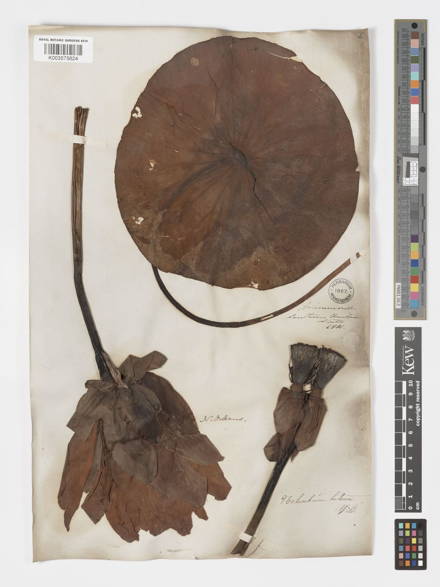
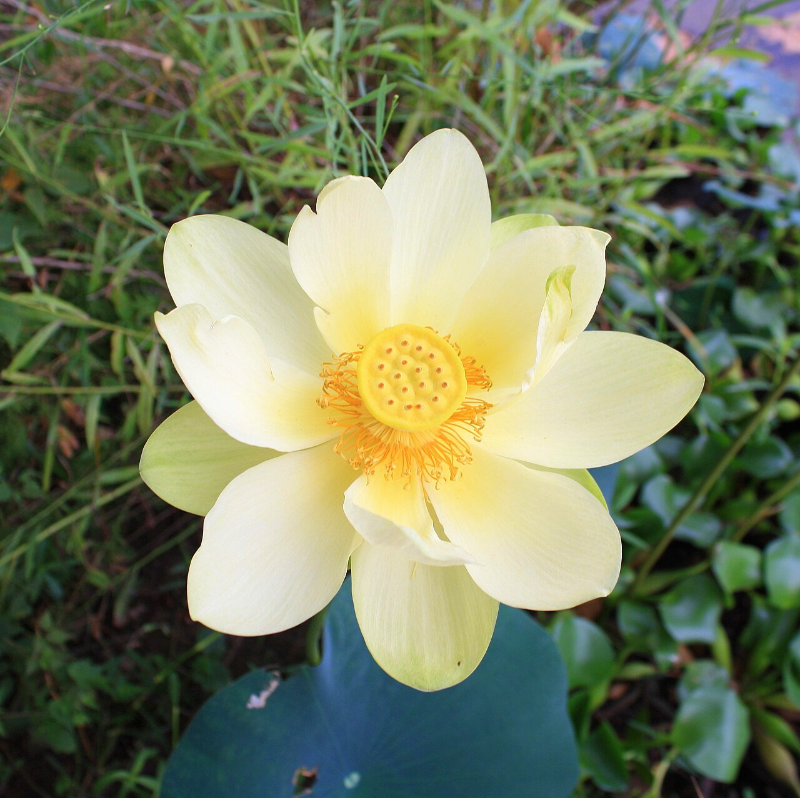
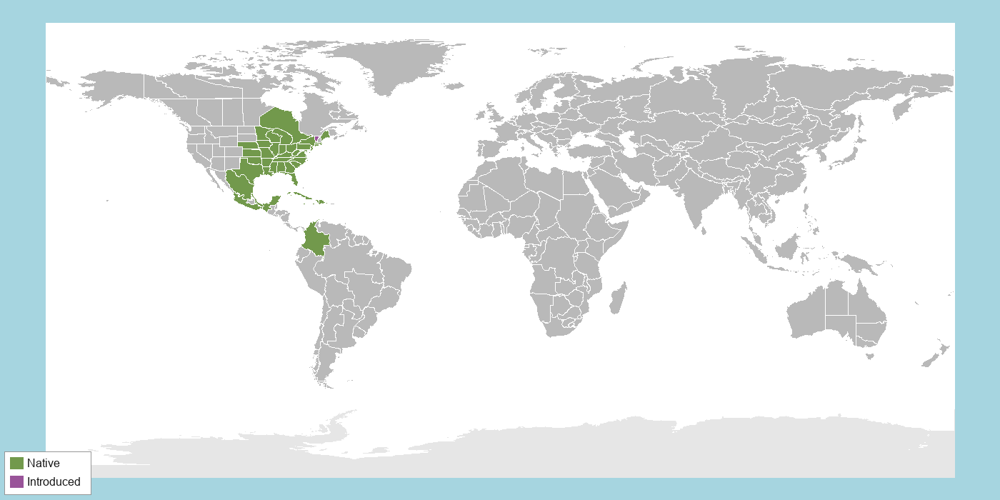

AIdentifying Features
American Lotus is a rhizomatous aquatic perennial herb, not a woody plant — it dies back to its mud-buried rhizome each winter. Its most distinctive feature is its leaf: large and round (30–70 cm across), blue-green, and peltate, meaning the petiole attaches at the center of the leaf's underside rather than at the edge, like a tiny umbrella. Leaves either float flat on the water or stand well above it on stout, waxy stalks, with veins radiating outward from the central point in a branching pattern.
Flowers are large (up to 25 cm across), pale creamy-yellow, and fragrant, with 15–25 petals surrounding a distinctive flat-topped, cone-shaped central receptacle. Each flower opens for about three days, closing each night. After pollination, that receptacle hardens into a woody, flat-topped seed head with 10–30 individual pockets, each holding one hard nut-like seed — giving it a pitted, shower-head appearance unlike almost any other wetland plant (Romanov et al., 2022).

Herbarium specimen showing the round, peltate leaf with its central petiole attachment and radiating veins.
Source: Kew Herbarium Catalogue, specimen K003575624. © Board of Trustees, RBG Kew, CC BY 3.0.

Flower in bloom, showing the flat-topped central receptacle that later hardens into the seed pod.
Photo: Altairisfar (2011), Wikimedia Commons, CC BY-SA 3.0
BHabitat & Range
American Lotus is native to eastern and central North America, ranging from southern Ontario and New York west to Minnesota and Iowa, south through the Mississippi and Ohio valleys to Florida and Texas, with additional native populations in Mexico, Central America, and the Caribbean. It is an obligate wetland species — it occurs only where standing or slow-moving fresh water is present.
Look for it rooted in the mucky bottoms of ponds, natural lakes, sluggish streams, and freshwater tidal marshes, always in full sun. Genetic evidence shows American Lotus diverged from its Asian relative, the sacred lotus (Nelumbo nucifera), only around 2 million years ago, despite the two species now growing on opposite sides of the world (Zheng et al., 2022). Though still widespread, it has declined sharply from wetland loss and is now state-listed as threatened or endangered across parts of its northeastern range.

Native range (green) vs. introduced/naturalized range (purple).
Distribution data: POWO, 2025. Region boundaries: TDWG WGSRPD Level 3 (Brummitt, 2001).
CBiology & Ecology
☀️ Photosynthetic Pathway
American Lotus uses standard C3 photosynthesis. Photosynthetic rate, elongation rate, and chlorophyll content all rise sharply with both light and temperature in young plants, peaking under warm, high-light conditions typical of a sun-exposed summer wetland and dropping off quickly as temperatures cool (Al-Hamdani & Francko, 1992). Its large, emergent or floating leaves maximize light capture above the water surface, while a specialized internal air-canal system — ventilated through actively regulated stomata on the leaf's upper surface — keeps those leaves supplied with carbon dioxide and lets the whole plant function despite having much of its tissue submerged or buried in oxygen-poor mud (Matthews & Seymour, 2014). A C3 pathway suits this species well: standing water buffers leaf temperature and keeps humidity high, so the water-conserving adaptations of C4 or CAM plants offer little advantage in a freshwater wetland where water is never in short supply.
💧 Resource Acquisition Strategy
Strategy — mining nutrients from suffocating mud. American Lotus draws nitrogen and phosphorus from oxygen-poor sediment that would suffocate the roots of most land plants, by carrying its own oxygen supply down to its buried roots through an internal air-delivery system.
Structures. The plant grows two kinds of rhizomes — slender ones near the mud surface and thicker, starch-storing ones that reach deeper — which anchor it and stockpile carbohydrate reserves for rapid regrowth each spring. Because those rhizomes and roots sit in anoxic mud, the plant depends on aerenchyma, a spongy internal tissue riddled with air canals, to pipe oxygen from the emergent leaves down to the roots (Xie et al., 2022).
Ecosystem-scale cycling. Some of that internally delivered oxygen leaks out of the roots into the surrounding sediment — a process called radial oxygen loss — creating tiny oxygenated pockets in an otherwise anoxic mud. These micro-zones drive coupled nitrification–denitrification that accelerates nitrogen removal and alters greenhouse-gas fluxes such as nitrous oxide from the wetland (Jiang et al., 2020). As it grows, lotus pulls nitrogen and phosphorus out of the sediment and water column into its biomass, acting as a nutrient pump that strips nutrients from the pond during the growing season and releases a share of them back when its tissues die down and decompose (Seo et al., 2010).
Impact on other species. The oxygenated rhizosphere supports aerobic microbes and burrowing invertebrates in sediment where they otherwise could not live, while dense floating and emergent leaves shade the water and cool it; by seasonally capturing and releasing nutrients, a lotus stand helps set the water quality and productivity that the rest of the wetland community depends on.
🌸 Reproductive Strategy
Sexual, asexual, or both? Both, and it leans heavily on each for a different job. Vegetatively (asexually), it spreads clonally through its branching rhizomes, which is how a single plant can blanket a whole pond — this dominates local, short-range expansion within a wetland. Sexually, it flowers and sets seed, which provides genetic variation, long-distance travel, and long-term survival (Teng et al., 2012).
Pollinators. Yes — its large, fragrant, creamy flowers are pollinated mainly by beetles and bees. Remarkably, the flower is thermogenic: it heats its central receptacle several degrees above the surrounding air, which volatilizes its scent and provides a warm overnight shelter that rewards and retains beetle pollinators (Dieringer et al., 2014). No single insect is its exclusive partner.
Fertilization. Each flower is female-first (protogynous) — its stigmas are receptive before its own pollen is shed — which discourages self-pollination and favors crossing. Insects dusted with pollen from one flower carry it to the receptive stigmas of another, and pollen tubes then grow to the ovules embedded in the spongy central receptacle to fertilize them (Teng et al., 2012).
Seeds & dispersal. It produces hard-shelled seeds (nutlets) — not spores — held in the woody, flat-topped receptacle. As the receptacle dries and bends over, the seeds drop into the water, where currents and waterfowl carry them to new sites (a mix of water and animal dispersal). Their thick, impermeable coats give them extraordinary dormancy: Nelumbo seeds have germinated after more than a thousand years, letting populations wait out long unfavorable periods (Shen-Miller et al., 1995).
🐝 Species Interactions
The interaction — keeping microbes off with a self-cleaning leaf. The lotus leaf's famous water-repelling, self-cleaning surface — the "lotus effect" — is really a defense against other organisms. Microscopic wax bumps make the leaf so water-repellent that raindrops bead up and roll off, sweeping away dust and, importantly, the fungal spores and bacteria that would otherwise settle on and colonize the leaf (Barthlott & Neinhuis, 1997; Neinhuis & Barthlott, 1997).
How it helps the plant. By stopping pathogenic microbes and grime from sticking, the plant keeps its large photosynthetic leaves clean and resists leaf diseases — a real advantage in a warm, wet, microbe-rich wetland. It is not strictly essential to survival, but this passive defense helps the plant stay productive and disease-free, supporting its growth and abundance. (American Lotus shares the same superhydrophobic leaves that made its close relative, the sacred lotus, the model for this "lotus effect.")
Impact on the other species (−). Negative for the would-be colonizers: fungal spores and bacteria cannot attach or establish, and are rinsed away before they can infect the leaf.
References for this Species
APA 7 format. Sources used for text are listed first; image sources follow and do not count toward the per-species source minimum. Full running list, organized by species, also appears on the References page.
- Al-Hamdani, S., & Francko, D. A. (1992). Effect of light and temperature on photosynthesis, elongation rate and chlorophyll content of Nelumbo lutea (Willd.) Pers. seedlings. Aquatic Botany, 44(1), 51–58. https://doi.org/10.1016/0304-3770(92)90080-3 Peer-reviewed
- Dieringer, G., Cabrera R., L., & Mottaleb, M. (2014). Ecological relationship between floral thermogenesis and pollination in Nelumbo lutea (Nelumbonaceae). American Journal of Botany, 101(2), 357–364. https://doi.org/10.3732/ajb.1300370 Peer-reviewed
- Matthews, P. G. D., & Seymour, R. S. (2014). Stomata actively regulate internal aeration of the sacred lotus Nelumbo nucifera. Plant, Cell & Environment, 37(2), 402–413. https://doi.org/10.1111/pce.12163 Peer-reviewed
- Romanov, M. S., Bobrov, A. V. F. C. H., Romanova, E. S., Zdravchev, N. S., & Sorokin, A. N. (2022). Fruit development, structure and histology in Nelumbo (Nelumbonaceae: Proteales). Botanical Journal of the Linnean Society, 198(3), 306–325. https://doi.org/10.1093/botlinnean/boab067 Peer-reviewed
- Xie, Q., Hou, H., Yan, P., Zhang, H., Lv, Y., Li, X., Chen, L., Pang, D., Hu, Y., & Ni, X. (2022). Programmed cell death associated with the formation of schizo-lysigenous aerenchyma in Nelumbo nucifera root. Frontiers in Plant Science, 13, Article 968841. https://doi.org/10.3389/fpls.2022.968841 Peer-reviewed
- Zheng, P., Sun, H., Liu, J., Lin, J., Zhang, X., Qin, Y., Zhang, W., Xu, X., Deng, X., Yang, D., Wang, M., Zhang, Y., Song, H., Huang, Y., Orozco-Obando, W., Ming, R., & Yang, M. (2022). Comparative analyses of American and Asian lotus genomes reveal insights into petal color, carpel thermogenesis and domestication. The Plant Journal, 110(5), 1498–1515. https://doi.org/10.1111/tpj.15753 Peer-reviewed
- Seo, D. C., DeLaune, R. D., Han, M. J., Lee, Y. C., Bang, S. B., Oh, E. J., Chae, J. H., Kim, K. S., Park, J. H., & Cho, J. S. (2010). Nutrient uptake and release in ponds under long-term and short-term lotus (Nelumbo nucifera) cultivation: Influence of compost application. Ecological Engineering, 36(10), 1373–1382. https://doi.org/10.1016/j.ecoleng.2010.06.015 Peer-reviewed
- Jiang, X., Tian, Y., Ji, X., Lu, C., & Zhang, J. (2020). Influences of plant species and radial oxygen loss on nitrous oxide fluxes in constructed wetlands. Ecological Engineering, 142, Article 105644. https://doi.org/10.1016/j.ecoleng.2019.105644 Peer-reviewed
- Teng, N. J., Wang, Y. L., Sun, C. Q., Fang, W. M., & Chen, F. D. (2012). Factors influencing fecundity in experimental crosses of water lotus (Nelumbo nucifera Gaertn.) cultivars. BMC Plant Biology, 12, Article 82. https://doi.org/10.1186/1471-2229-12-82 Peer-reviewed
- Shen-Miller, J., Mudgett, M. B., Schopf, J. W., Clarke, S., & Berger, R. (1995). Exceptional seed longevity and robust growth: Ancient sacred lotus from China. American Journal of Botany, 82(11), 1367–1380. https://doi.org/10.1002/j.1537-2197.1995.tb12673.x Peer-reviewed
- Barthlott, W., & Neinhuis, C. (1997). Purity of the sacred lotus, or escape from contamination in biological surfaces. Planta, 202(1), 1–8. https://doi.org/10.1007/s004250050096 Peer-reviewed
- Neinhuis, C., & Barthlott, W. (1997). Characterization and distribution of water-repellent, self-cleaning plant surfaces. Annals of Botany, 79(6), 667–677. https://doi.org/10.1006/anbo.1997.0400 Peer-reviewed
- Claude. (2026). Assistance with brainstorming and synthesizing information for Photosynthetic Pathways [Large language model]. Anthropic. https://claude.ai
- Claude. (2026). Assistance with brainstorming and synthesizing information for Resource Acquisition Strategies [Large language model]. Anthropic. https://claude.ai
- Claude. (2026). Assistance with brainstorming and synthesizing information for Reproductive Strategies [Large language model]. Anthropic. https://claude.ai
- Claude. (2026). Assistance with brainstorming and synthesizing information for Species Interactions [Large language model]. Anthropic. https://claude.ai
Image & map sources (not counted toward the per-species source minimum):
- Famartin. (2025). 2025-09-13 15 32 15 Large expanse of American Lotus within 40-Acre Lake in Brazos Bend State Park in Fort Bend County, Texas [Photograph]. Wikimedia Commons. https://commons.wikimedia.org/wiki/File:2025-09-13_15_32_15_...jpg. CC BY-SA 4.0.
- Altairisfar. (2011). American Lotus (Nelumbo lutea) 01 [Photograph]. Wikimedia Commons. https://commons.wikimedia.org/wiki/File:American_Lotus_(Nelumbo_lutea)_01.jpg. CC BY-SA 3.0.
- POWO. (2025). Nelumbo lutea (Willd.) Pers. In Plants of the World Online. Royal Botanic Gardens, Kew. Retrieved July 15, 2026, from https://powo.science.kew.org/taxon/urn:lsid:ipni.org:names:605419-1. Distribution data CC BY 3.0.
- Harvey, J. (2008). BlankMap-World-Equirectangular [Map]. Wikimedia Commons. https://commons.wikimedia.org/wiki/File:BlankMap-World-Equirectangular.svg. CC0 (public domain). Used as basemap.
- Royal Botanic Gardens, Kew. (n.d.). Nelumbo lutea [Herbarium specimen K003575624, digital image]. Kew Herbarium Catalogue, via Plants of the World Online. Retrieved July 16, 2026, from https://powo.science.kew.org/taxon/urn:lsid:ipni.org:names:605419-1/images. CC BY 3.0.